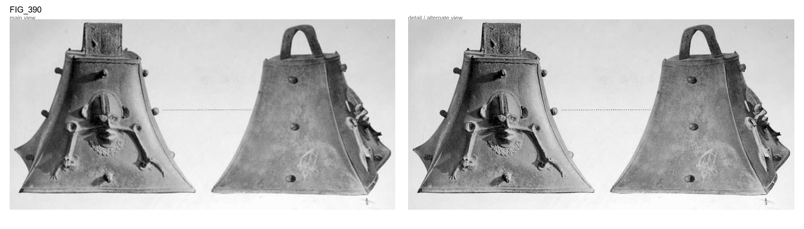
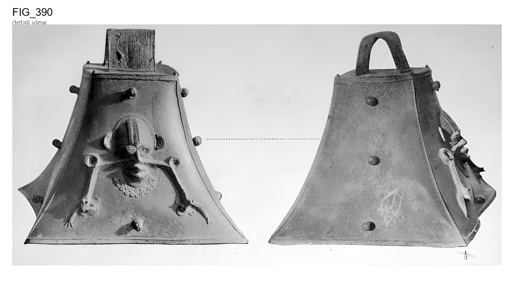
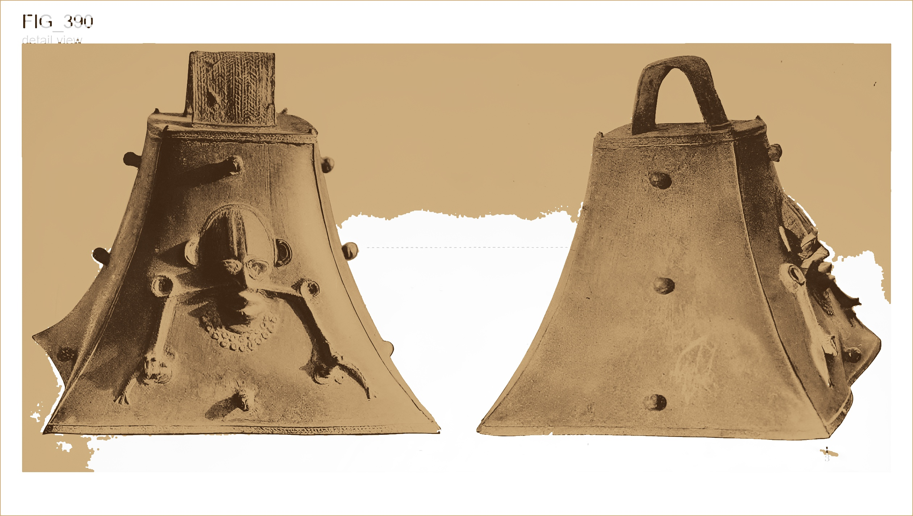

Original scan

AI-enhanced

Bronze reconstruction

Large metal bell
Large metal bell. snakes issuing from the nostrils. On one side is a human face in relief, with Each of the two snakes grasps a mud The ears project from the sides of the head-dress, or cat fish in its jaws. and the neck has a frill consisting of a double row of perforated circles. The handle has an incised herring-bone ornamentation. Projecting from The base and crown of the bell have the sides of the bell are eight knobs. a border of strap-work pattern. Height of bell, 1 inches.
The enhanced and bronze images are interpretive visualizations for legibility and material comparison. The original scan remains the primary archival reference.